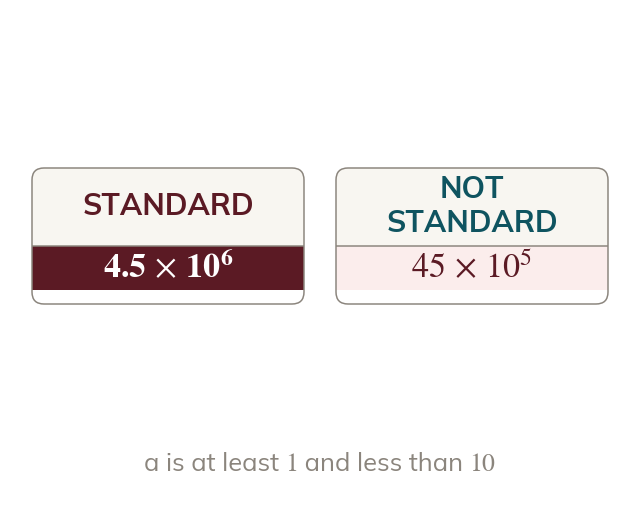

One digit before the point
Standard form is with at least and less than
So is in standard form. is not.
A number in standard form is where is at least and less than
So is in standard form, but is not.
So is in standard form, but is not.